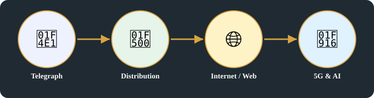
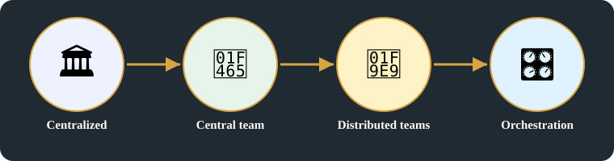

🧬 Systems Evolution · Card I · 9 of 11 · Batch 3, branch batch/b3publish
Tech leadership Era
Enhanced headline [Added, labelled, related only]: Who leads each era: org structure, tech strategy, and leadership mindset
Original images +
Original headline(s) first (R15), exactly as written:
- Tech leadership Era
Original pages behind this card, untouched. On the public repo these images are NOT included — they are in the Vercel deploy only, as with Batches 1–2.

Transcription notes — archive only, not on the main page:
- 'Centralized' is written diagonally, crossed through, at the top of the original page.
Detailed explanation

1. Leadership is three questions, not one style
- Leadership is not a single style: in each era, the same three questions get a different answer — how is the organisation structured, what is the tech strategy, and what mindset does the leader hold?
- Telegraph era, 1940s: centralised, protocols, and link state — one link, one state, one protocol to establish communication, with connectivity as the business focus and adaptability, including work life balance, as the mindset.
- Distribution era, 1980–1990: managing decentralisation — a centralised team managing heterogeneous, distributed systems, with interoperability protocols as the dev work, under coordination across peers.
- Internet / web / cloud era, 2000: the page starts with hypergrowth and stops — core focus = Building hypergrowth, and the rest is completed below, labelled [Added], not original.
2. The completion, labelled [Added — proposed]
- Era 3, Internet / web / cloud [Added — proposed, core focus original]: distributed product / platform teams with central standards bodies above them — ICANN, IETF, W3C — tech = web servers, browsers + database, Apache, MySQL; leadership = hypergrowth mindset, build for scale; business = Ad network / subscription.
- Era 4, Mobile & cloud [Added — proposed]: mobile-first, cloud-native, always-on services; org = small service teams + central platform / app-store / Cloud IAM gates; tech = APIs, microservices, cloud architecture (Kub + Terra), mobile apps; leadership = product mindset, user experience, continuous delivery; business = SaaS + usage.
- Era 5, 5G & AI, 2020 – Now, till 2026 [Added — proposed]: real-time, intelligent services; org = AI / platform / data / edge teams + central company rules; tech = AI models (GPT, Claude), GPU + IoT + Edge, AI pipeline MEC orchestration, (PyTorch, TensorFlow) service mesh; leadership = orchestration mindset, deciding what AI, humans, and the edge decide; business = API Token. 2026 is the end of Era 5, not a separate era.
- Nothing after 2000 above is original: org structure and leadership mindset for Eras 3–5 are proposed interpretations, marked as such, and the owner can overrule any of them. No specific prices, model versions, or company org claims are made.
Summary:
- Leadership changes with the era, across the same three questions: structure, tech strategy, and mindset.
- The original page stops at 2000, at hypergrowth — everything after that on this page is labelled [Added] completion, proposed where it is interpretation.
- The arc runs from centralised links, to managing decentralisation, to hypergrowth, to always-on products, to orchestrating intelligence.

Key points
- Centralized
- 1940's Telegraph → connectivity. function. (dev)
- Focus & core Business → Establishing comm protocols
- Boxes: Org Structure / Tech strategy / Leadership mindset — Org Structure → centralized; Tech strategy → protocols; Leadership mindset → Link state → Adaptability; Adaptability = work life balance; maintaining work life balance
- ② 1980-1990 Distribution Era — Core focus = managing Decentralization. Decentralization = centralized team, heterogenous sys, Distribution peers. Dev Protocols = interoperability protocols
- 2000 ③ Internet / web / cloud Era — Core focus = Building hypergrowth. Page ends here. No further text for this era on this page.
Horizontal links
- Leadership / org thread → Batch 1, Card A (origins, business organisation) and Batch 1, Card E (building / operating / approving).
- Telegraph thread → Batch 2, Card H (UI evolution, telegraph era).
- Distribution / decentralization thread → Card J (same eras, UI / control / business lenses).
Related topics
Related cards in learning order, with their technical perspectives as lenses — not duplicate cards in domain boxes (R17).
- Batch 1, Card A — Why networks exist
Systems evolution - Batch 1, Card E — Building, operating and approving a product
Systems evolution - Batch 2, Card H — UI frameworks Evolution
Systems evolution - Card J — Eras UI Frameworks + Hardware controlled / SW
Systems evolution · technical perspectives: software-engineering-development, hardware-computing, infrastructure-operations, industrial-business-networks